#1 - Onvoldoende kleurcontrast
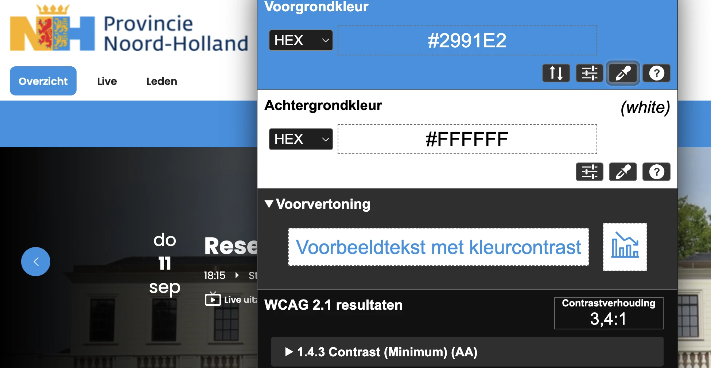
Wij hebben de content van de website noord-holland.stateninformatie.nl onderzocht tussen 20 en 22 augustus 2025. Op dit moment zijn 28 van de 33 succescriteria als voldoende beoordeeld. In dit rapport lees je wat er bij de overige 5 nog fout gaat, en hoe je dat kunt verbeteren.
In opdracht van

Buiten scope:
Exporteer alle bevindingen als CSV-bestand. Je kunt het in een (online) spreadsheet inladen om met je team samen te werken.
Exporteer alle bevindingen als Jira-compatibel CSV-bestand. Je kunt het direct importeren via Jira > Issues > Import issues from CSV.
Houd per bevinding bij of het is opgelost. Je voortgang wordt opgeslagen in jouw browser. Niemand anders kan je resultaat zien.
Geen bevindingen gevonden voor dit filter.

Link naar pagina: Home Geen bevindingen.
Link naar pagina: Inlogscherm Geen bevindingen.
Link naar pagina: J. Dessing FVD
Op deze pagina onder "J. Dessing", in een sectie met verborgen inhoud, zijn de elementen die verborgen inhoud openen en sluiten niet gemarkeerd als een koptekst.
De teksten waarmee je delen van een accordeon kunt inklappen en uitklappen, doen dienst als koppen voor die delen. Daarom moeten deze teksten ook de rol van kop hebben. Het gaat verkeerd als deze teksten niet in de code als kop zijn gemarkeerd met een h-element zoals h2 of h3.
Markeer deze teksten als kop of zorg dat de bestaande rol van kop niet wordt overschreven.
Link naar pagina: Kalender Geen bevindingen.
Link naar pagina: Leden Geen bevindingen.
Link naar pagina: Live Geen bevindingen.
Link naar pagina: Pagina niet gevonden Geen bevindingen.
Link naar pagina: Vergadering Provinciale Staten (uitloop) 07-07-2025 Link naar PDF: 2025-06-30 en 07-07 Besluitenlijst PS -concept-
Dit PDF-document heeft in de bestandseigenschappen de titel “2025-06-30 Besluitenlijst PS -concept-.docx”, wat niet duidelijk genoeg is. Bovendien wordt de bestandsnaam in de titelbalk weergegeven in plaats van de documenttitel. Zelfs als er een titel op de eerste pagina staat, moet je in de pdf-instellingen ook een documenttitel instellen. Als je een pdf opent in een pdf-lezer (zoals Adobe Acrobat of een browser), zie je de bestandsnaam meestal bovenaan in de titelbalk, bijvoorbeeld document123.pdf. Maar als je een documenttitel in de pdf-metadata instelt, dan wordt die titel in plaats van de bestandsnaam getoond. Dit maakt het document toegankelijker voor bezoekers met verschillende beperkingen. Zij kunnen dan snel en gemakkelijk zien of het document relevant is.
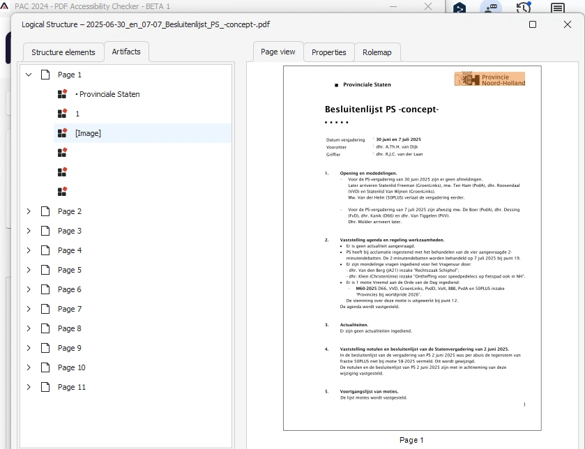
This pdf-document is partially tagged. The following content is not tagged: text “Provinciale Staten”. Dit deel van het document kunnen wij hierdoor niet onderzoeken. Het gaat om alle succescriteria die met de pdf-codelaag te maken hebben, zoals semantische koppen en alternatieve teksten bij afbeeldingen. Als je dit oplost, is het dus mogelijk dat er nieuwe toegankelijkheidsproblemen ontstaan die nu nog niet aan het licht zijn gekomen. Bijvoorbeeld met de tekstlabels voor de formuliervelden, maar ook de relaties van de formuliervelden met de kolomkoppen erboven.
Voorzie dit gedeelte van codes die de structuur van het document weergeven. Op deze pagina staat een instructie hoe je PDF zelf moet testen op toegankelijkheid: https://properaccess.nl/instructie-pdfs-testen-met-pac-2024/.
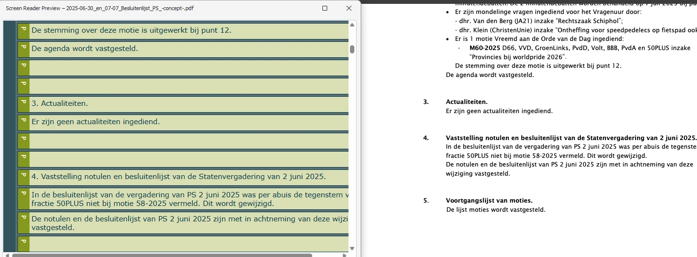
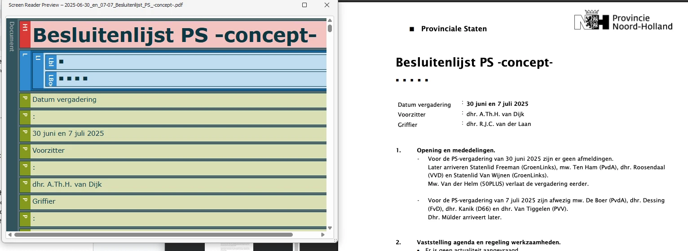
Link naar pagina: Vergadering 30-06-2025 Link naar PDF: 2025-06-30 Notulen PS -concept-
Dit PDF-document heeft in de bestandseigenschappen de titel “2025-06-30 Notulen PS -concept-.docx”, wat niet duidelijk genoeg is. Daarnaast wordt de bestandsnaam in de titelbalk weergegeven in plaats van de documenttitel. Zelfs als er een titel op de eerste pagina staat, moet je in de pdf-instellingen ook een documenttitel instellen. Als je een pdf opent in een pdf-lezer (zoals Adobe Acrobat of een browser), zie je de bestandsnaam meestal bovenaan in de titelbalk, bijvoorbeeld document123.pdf. Maar als je een documenttitel in de pdf-metadata instelt, dan wordt die titel in plaats van de bestandsnaam getoond. Dit maakt het document toegankelijker voor bezoekers met verschillende beperkingen. Zij kunnen dan snel en gemakkelijk zien of het document relevant is.
th-tags gebruikt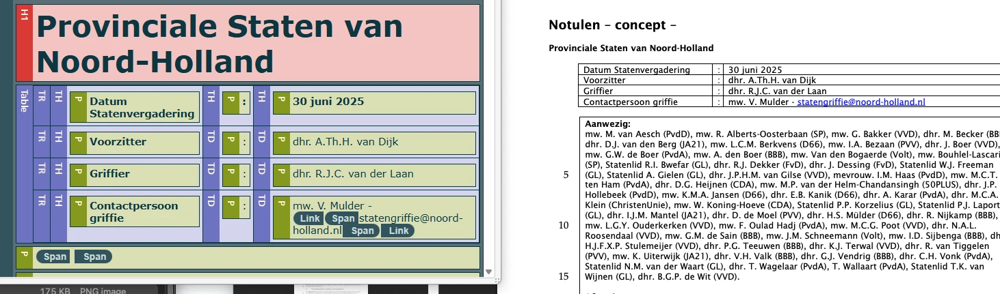
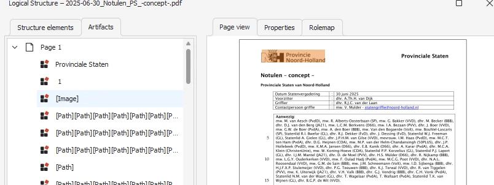
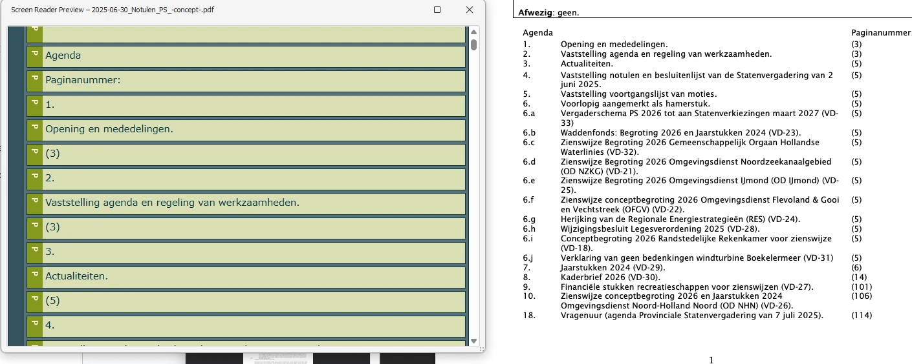
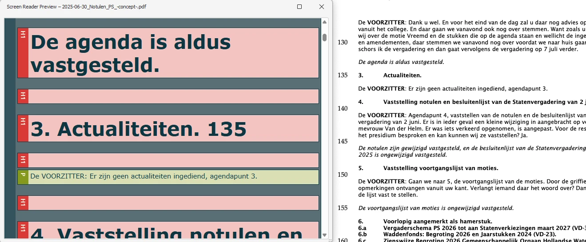
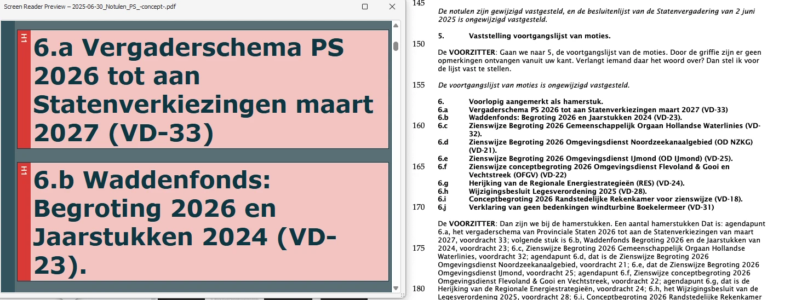
Link naar pagina: Vergadering Provinciale Staten (uitloop) 07-07-2025
em-element is gebruikt voor opmaakOp deze pagina wordt het em-element misbruikt voor stylingdoeleinden.
Het em-element heeft een semantische waarde: het geeft een bepaalde betekenis aan de tekst die erin staat. Dit element geeft aan dat de tekst extra nadruk moet krijgen. Om die reden mag dit element niet gebruikt worden om alleen een visueel effect te bereiken (cursieve tekst).
Verwijder de onnodige em-elementen en gebruik CSS om de tekst schuingedrukt te maken.
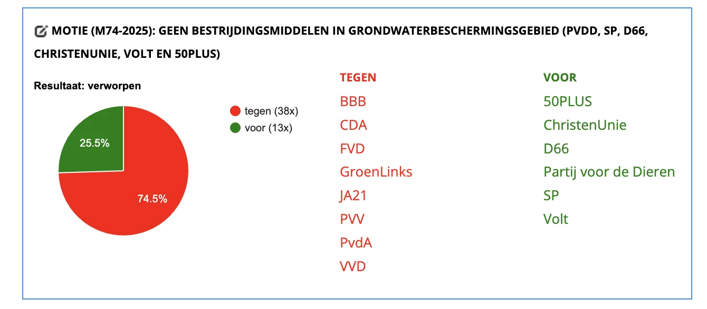
Link naar pagina: Vergadering Expertmeeting & Commissie Landelijk gebied 13-01-2025
em-element is gebruikt voor opmaak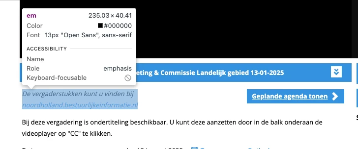
Link naar pagina: Vergadering 30-06-2025 Zie bevindingen bij andere vergaderingen.
Link naar pagina: Vergaderingen
Op deze pagina onder "Agenda" staat een sectie met teksten die verborgen inhoud openen en sluiten. Deze teksten zijn niet gemarkeerd als kopteksten.
De teksten waarmee je delen van een accordeon kunt inklappen en uitklappen, doen dienst als koppen voor die delen. Daarom moeten deze teksten ook de rol van kop hebben. Het gaat verkeerd als deze teksten niet in de code als kop zijn gemarkeerd met een h-element zoals h2 of h3.
Markeer deze teksten als kop of zorg dat de bestaande rol van kop niet wordt overschreven. De instructie hoe je koppen op een webpagina kan opsporen staat op deze pagina: https://properaccess.nl/zo-controleer-je-de-koppenstructuur-van-je-website/.
Onze rapporten zijn anders. Bij het bespreken van de gevonden problemen volgen wij niet de structuur van de norm, maar die van jouw website of app. Hierdoor kun je gewoon per pagina of scherm aan de slag gaan. Wel zo makkelijk! Je vindt verderop een overzicht van alle pagina’s met problemen.
We geven je bij elk gevonden issue een paar voorbeelden, maar niet een complete lijst. Controleer zelf of het probleem ook nog op andere plekken voorkomt. Zie het rapport als een leidraad.
Dit onderzoek laat zien in hoeverre de website op dit moment voldoet aan WCAG 2.2, niveau A en AA. WCAG staat voor Web Content Accessibility Guidelines. Dit is de internationale norm voor digitale toegankelijkheid. De Europese norm EN 301 549 bevat alle eisen van WCAG op niveau A en AA.
In dit rapport hebben we korte beschrijvingen van de succescriteria uit de norm opgenomen, met een algemene uitleg erbij. Wil je ze helemaal lezen? Bekijk dan de documentatie van WCAG.
We gebruiken de onderzoeksmethode WCAG-EM van het W3C. Het proces ziet er als volgt uit:
Het grootste deel van het onderzoek doen we met de hand. Voor een deel van de toegankelijkheidseisen gebruiken we automatische tools als ondersteuning, zoals axe-core en Chrome Developer Tools.
Dit rapport helpt je om de toegankelijkheid van je website te verbeteren. Maar let op: het is geen definitieve, volledige lijst van alle aanwezige toegankelijkheidsproblemen. Dat zit zo:
Ten eerste is het onderzoek gebaseerd op een steekproef. Die is op een betrouwbare manier genomen, en de meeste problemen zullen daardoor zeker aan het licht komen. Toch kan een probleem net buiten de steekproef vallen. Bij een volgend onderzoek kan het wel ontdekt worden.
We beoordelen vanuit het principe van falsificatie. Dat houdt in dat we proberen te bewijzen dat iets niet waar is, in plaats van te bevestigen dat het klopt. ‘Voldoet’ betekent daarom dat we geen reden hebben gevonden om een punt af te keuren. Maar als we later wél een reden vinden, kan het alsnog worden afgekeurd.
Het komt voor dat de beoordeling van een succescriterium op detailniveau verandert. De norm beschrijft namelijk niet élk mogelijk scenario. Samen met andere onderzoeksbureaus overleggen we hoe we met bepaalde situaties omgaan. Zo kan iets dat nu wordt afgekeurd, soms bij een volgend onderzoek worden goedgekeurd en andersom.
Ten slotte kan het gebeuren dat bij het oplossen van een probleem onbedoeld een nieuw toegankelijkheidsprobleem ontstaat. Dat komt dan bij een volgend onderzoek pas naar voren.
Alle gevonden toegankelijkheidsproblemen staan onder Gevonden problemen. Je kunt de bevindingen filteren op:
Je kunt je voortgang op twee manieren bijhouden:
Bij elke bevinding verschijnt een link-icoon wanneer je er met de muis overheen gaat. Klik op dit icoon om de directe link naar die bevinding te kopiëren. Je kunt deze link plakken in een e-mail of chatbericht, bijvoorbeeld om een vraag te stellen aan Proper Access over een specifiek punt.